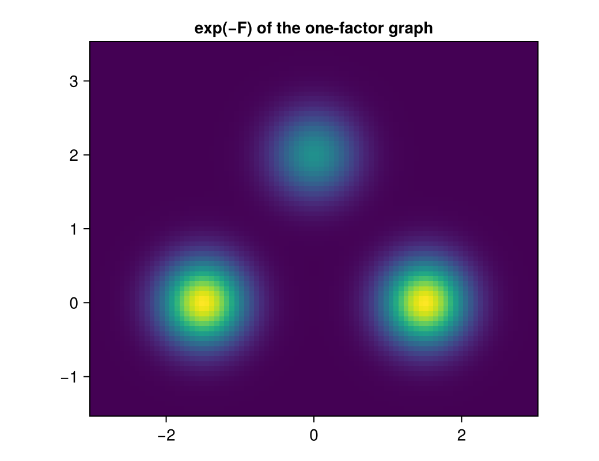

Mixtures from switching factors
Download as a Jupyter notebook
A graph of linear-Gaussian factors never has a second mode, however it is wired. The smallest factor that changes that is SwitchingConstraintFactor: a linear constraint whose right-hand side is chosen by a discrete outcome, $0 = \sum_i A_i x_i - b_k + \varepsilon$ with $P(k) = w_k$. This tutorial uses one such factor as a Gaussian mixture, then wires two of them into a sum node to get a grid of modes. On the grid it compares belief propagation, a mean-field sum node and exact inference. (Background: the vault notes Switching Constraint Factors and Composing Stochastic Factors.)
using Lenticulum, LenticulumCore, Mycelium, LinearAlgebra, LuxCore, Random, Printf
using CairoMakie: CairoMakie, Figure, Axis, heatmap!, DataAspectOne factor is a Gaussian mixture
With $A = I$ the factor is $w_k \mathcal N(z; b_k, Q)$: a mixture whose means are the columns of b. Q is a fixed hyperparameter; b and the log-weights logw are the parameters.
f = SwitchingConstraintFactor((z = 2,), 3, 2; noise = 0.15)
ps = (A = (z = Matrix(1.0I, 2, 2),), b = [-1.5 1.5 0.0; 0.0 0.0 2.0], logw = log.([0.4, 0.4, 0.2]))Every channel can be the target of an exact message. With nothing observed, the message to z is the mixture itself, a MixtureBelief with the factor's weights:
mz, _ = Mycelium.factor_message(f, :z, nothing, NamedTuple(), nothing, ps, NamedTuple())
mixture_weights(mz), [belief_mean(c) for c in mz.components]([0.39999999999999986, 0.39999999999999986, 0.20000000000000023], [[-1.5, 0.0], [1.5, 0.0], [0.0, 2.0]])Observing z and asking for the outcome is the measurement: the message to k is the evidence of each outcome. In a graph, a data factor clamps z and the outcome is a variable of its own:
function mixture_graph(z)
b = GraphBuilder()
variable!(b, :z, 2); variable!(b, :k, 3)
factor!(b, :data, DataFactor(:z, z)); factor!(b, :sw, f)
connect!(b, :data, :z, :z; direction = Emitting())
connect!(b, :sw, :z, :z; direction = Absorbing())
connect!(b, :sw, :k, :k)
g = build(b)
return g, merge(LuxCore.initialparameters(Xoshiro(0), g), (sw = ps,))
end
g, gps = mixture_graph([0.9, 0.6])
marg, _, st, store = infer!(g, tree_schedule(g), gps, NamedTuple())
probabilities(marg.k)3-element Vector{Float64}:
1.5221780595648985e-8
0.9994616441255261
0.0005383406526935394The factor's belief over $(z, k)$ has a closed-form entropy, $H(k) + H(z \mid k)$, so the graph's Bethe free energy is available, and on this tree it is $-\log p(z)$. Checked against the mixture density:
F, _ = LenticulumCore.scalar_free_energy(store, g, gps, st)
lognormal(x, μ, Σ) = -(dot(x - μ, Σ \ (x - μ)) + logdet(2π * Σ)) / 2
w = exp.(ps.logw)
logp = log(sum(w[k] * exp(lognormal([0.9, 0.6], ps.b[:, k], f.Q)) for k in 1:3))
@printf("free energy %.10f, -log p(z) %.10f\n", F, -logp)free energy 3.2565093126, -log p(z) 3.2565093126
So the free energy of the graph is the model's density. Evaluated on a grid, it draws the mixture:
function free_energy_at(z)
g, gps = mixture_graph(z)
_, _, st, store = infer!(g, tree_schedule(g), gps, NamedTuple())
return first(LenticulumCore.scalar_free_energy(store, g, gps, st))
end
xs = range(-3, 3; length = 90); ys = range(-1.5, 3.5; length = 75)
dens = [exp(-free_energy_at([x, y])) for x in xs, y in ys]
fig = Figure(size = (520, 400))
ax = Axis(fig[1, 1]; aspect = DataAspect(), title = "exp(−F) of the one-factor graph")
heatmap!(ax, xs, ys, dens; colormap = :viridis)
fig
Composition: switches into a sum node
Two binary switches feeding a sum node, $z = c + k_1 \delta_1 + k_2 \delta_2 + \varepsilon$, give four modes on a parallelogram from two offsets. Each switch is a SwitchingConstraintFactor on its own variable $u_l = k_l \delta_l$ (a narrow noise makes it nearly exact), and the sum node is a LinearConstraintFactor, $z - u_1 - u_2 = c$. The two offsets point in similar directions, so the switches overlap: from one observation it is hard to tell which switch is on.
c = [0.0, 0.0]; δ = [2.0 1.6; 0.0 1.2]; p = [0.5, 0.5]; Σ = 0.3 * Matrix(1.0I, 2, 2)
function grid_graph(x, rule)
b = GraphBuilder()
variable!(b, :z, 2); foreach(v -> variable!(b, v, 2), (:u1, :u2)); foreach(v -> variable!(b, v, 2), (:k1, :k2))
factor!(b, :data, DataFactor(:z, x))
factor!(b, :sum, LinearConstraintFactor((z = 2, u1 = 2, u2 = 2), 2; noise = Σ); rule)
connect!(b, :data, :z, :z; direction = Emitting()); connect!(b, :sum, :z, :z; direction = Absorbing())
I2 = Matrix(1.0I, 2, 2)
swps = map(1:2) do l
name = Symbol(:sw, l)
factor!(b, name, SwitchingConstraintFactor((u = 2,), 2, 2; noise = 1e-8))
connect!(b, name, :u, Symbol(:u, l)); connect!(b, :sum, Symbol(:u, l), Symbol(:u, l))
connect!(b, name, :k, Symbol(:k, l))
name => (A = (u = I2,), b = [zeros(2) δ[:, l]], logw = log.([1 - p[l], p[l]]))
end
g = build(b)
ps = merge(LuxCore.initialparameters(Xoshiro(0), g),
(sum = (A = (z = I2, u1 = -I2, u2 = -I2), c = c),), NamedTuple(swps))
return g, ps
endExact inference enumerates the four configurations:
configs = [(a, b) for a in 0:1 for b in 0:1]
function exact(x)
l = [log(p[1]^a * (1 - p[1])^(1 - a) * p[2]^b * (1 - p[2])^(1 - b)) + lognormal(x, c + a * δ[:, 1] + b * δ[:, 2], Σ)
for (a, b) in configs]
P = exp.(l .- maximum(l)); P ./= sum(P)
return [sum(P[i] for (i, (a, _)) in enumerate(configs) if a == 1), sum(P[i] for (i, (_, b)) in enumerate(configs) if b == 1)]
endBelief propagation on this tree is one sweep. At the sum node each switch sees the other only through its prior moments, since the other's mixture message is collapsed to a mean and a covariance before use (assumed-density filtering):
function bp(x)
g, ps = grid_graph(x, BeliefPropagation())
marg, _, _, _ = infer!(g, tree_schedule(g), ps, NamedTuple())
return [probabilities(marg.k1)[2], probabilities(marg.k2)[2]]
endA mean-field sum node (rule = MeanField()) reads the other switch's current marginal instead, and the graph is iterated. The switch factors stay on belief propagation. This is the hybrid of Riegler et al. (2013); its fixed point is mean field over the two switches.
edge(g, fac, ch) = findfirst(e -> e.factor == g.factor_index[fac] && e.channel === ch, g.edges)
function hybrid(x)
g, ps = grid_graph(x, MeanField())
T = MessageTask
init = [T(edge(g, :data, :z), :to_variable), T(edge(g, :sw1, :u), :to_variable), T(edge(g, :sw2, :u), :to_variable)]
sweep = [T(edge(g, :sum, :u1), :to_variable), T(edge(g, :sum, :u2), :to_variable),
T(edge(g, :sw1, :u), :to_factor), T(edge(g, :sw1, :k), :to_variable),
T(edge(g, :sw2, :u), :to_factor), T(edge(g, :sw2, :k), :to_variable)]
s = MessageStore(g)
sweep!(s, g, SequentialSchedule(init), ps, NamedTuple())
report, _ = propagate!(s, g, SequentialSchedule(sweep), ps, NamedTuple(); maxsweeps = 200, tol = 1e-6)
return [probabilities(marginal(s, g, g.variable_index[k]))[2] for k in (:k1, :k2)], report
endFor a point between the modes, where the two explanations compete:
x = c + 0.5 * δ[:, 1] + 0.5 * δ[:, 2] + [0.3, -0.2]
P_mf, report = hybrid(x)
@printf("P(k₁ = 1), P(k₂ = 1): exact %.3f %.3f belief propagation %.3f %.3f mean field %.3f %.3f (%d sweeps)\n",
exact(x)..., bp(x)..., P_mf..., report.sweeps)P(k₁ = 1), P(k₂ = 1): exact 0.770 0.238 belief propagation 0.819 0.394 mean field 0.999 0.011 (5 sweeps)
Mean field over single switches settles on one explanation and is overconfident; belief propagation keeps both but misweighs them. The three disagree because the switches explain away each other: given $z$, "switch 1 on" and "switch 2 on" are alternatives, so the exact posterior has a strong negative correlation between them that no factorised answer can hold. Over many points this is what biases learning: the M-step needs $\mathbb E[k_1 k_2]$, and every factorised method replaces it by $q_1 q_2$. The cure measured on the branch experiment-qm is to put overlapping switches into one factor with $2^B$ outcomes, a block that is exact inside, and to keep the sum node on mean field between blocks. Here a single block holds both switches, and the posterior is exact:
block = SwitchingConstraintFactor((z = 2,), 4, 2; noise = Σ)
bps = (A = (z = Matrix(1.0I, 2, 2),), b = reduce(hcat, [c + a * δ[:, 1] + b * δ[:, 2] for (a, b) in configs]),
logw = [log(p[1]^a * (1 - p[1])^(1 - a) * p[2]^b * (1 - p[2])^(1 - b)) for (a, b) in configs])
mk, _ = Mycelium.factor_message(block, :k, nothing, (z = LenticulumCore.DiracBelief(x),), nothing, bps, NamedTuple())
P = probabilities(mk)
@printf("one block of both switches: P(k₁ = 1) %.3f, P(k₂ = 1) %.3f\n",
sum(P[i] for (i, (a, _)) in enumerate(configs) if a == 1), sum(P[i] for (i, (_, b)) in enumerate(configs) if b == 1))one block of both switches: P(k₁ = 1) 0.770, P(k₂ = 1) 0.238
What the free energy does not cover yet
A graph with a mean-field node has a different free energy from Bethe (Riegler et al. 2013), and Mycelium does not compute it yet. Rather than report the wrong number, it refuses:
g, gps = grid_graph(x, MeanField())
_, _, _, s = infer!(g, SequentialSchedule(all_tasks(g)), gps, NamedTuple(); maxsweeps = 5)
try
LenticulumCore.scalar_free_energy(s, g, gps, NamedTuple())
catch err
println(sprint(showerror, err))
endArgumentError: factor :sum uses MeanField() messages; the graph free energy and its gradients are implemented for belief propagation only, not for the hybrid with mean-field nodes (Riegler et al. 2013), so they are refused rather than misreported
The plan for that, and for the rest of Mycelium's extension, is in the vault note Extending Mycelium.
This page was generated using Literate.jl.